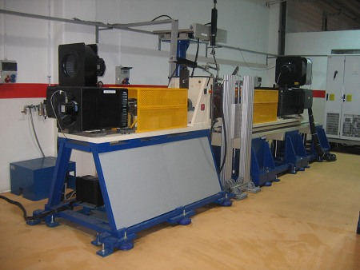
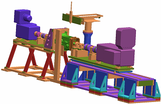
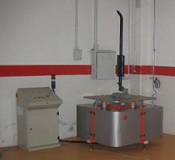
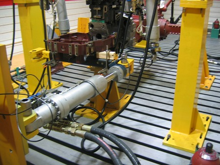
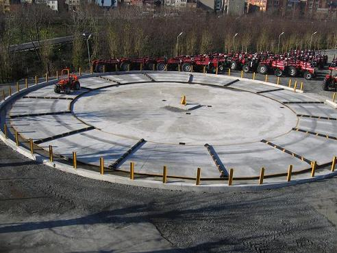
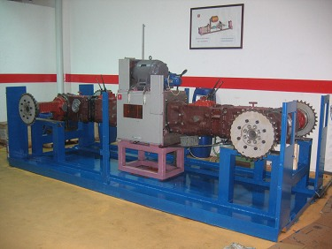

|
1. Türkiye'de sanayinin tarihsel geliþimi
Genel olarak Türkiye'de sanayinin geliþimini üç döneme ayýrmak mümkündür. Dördüncüsünün çalýþmalarý da þu an yapýlmakta, alt yapýsý hazýrlanmaktadýr.
1.1 Cumhuriyetin kuruluþ yýllarý dönemi (1923 - 1950)
Savaþtan çýkmýþ bir ülkenin yeniden yapýlanmasý ve kurulmasý inanýlmaz çaba gerektirmiþtir. Bu dönem sanayi kurmak ile deðil, ülkenin kurulmasý ile geçmiþtir.
1.2 "Know how" dönemi (1950 - 1983)
Bu dönemde artan nüfusa baðlý olarak oluþan ihtiyaçlarýn karþýlanmasý amacýyla, sanayi, kendi geliþtirmek ve üretmek yerine
halihazýrda var olan dýþ ülkelerdeki ürünleri yardým anlaþmalarý ile alarak o günkü þartlarda kolayý seçmiþ ve montaj sanayini kurmuþtur. Gümrük duvarlarýnýn korumasýnda geliþemeyen sanayi, senelerce Ar-Ge anlamýnda bir geliþim saðlayamamýþtýr.
1.3 Açýk ekonomi dönemi (1983 - 2012)
Deðiþen dünya ve yýkýlan gümrük duvarlarý tek bir ortak Pazar olgusu, Türkiye'nin de kaçýnýlmaz olarak serbest Pazar ekonomisini seçmesine sebebiyet vermiþtir. Ar-Ge kültürünün olmadýðý ülkemiz dýþarýdan gelen nitelikli, kaliteli, ucuz ürün ve marka bombardýmaný karþýsýnda fazla dayanamamýþ, 5-10 senede bir krize girmiþtir. Montaj sanayi bu dönemin ortalarýnda çökmüþtür. Çözüm olarak, montaj sanayi her ne kadar devam etmek istese de devam edememiþ ve üretim üssü olma yolu seçilmiþtir. Bugün bu dönemdeyiz. Bu dönemin de çok uzun sürmeyeceði yeni dönem hazýrlýklarýndan anlaþýlmaktadýr. Benim öngörüm 2012. Bu dönemde de ülkemiz sanayi Ar-Ge anlamýnda bir geliþim saðlayamamýþtýr.
1.4 Ar-Ge üssü dönemi (2012- 2023)
Þu anda yeni bir döneme geçiþin alt yapýsý
kurulmakta. Ýlk defa cumhuriyet tarihinde bir
sonraki dönemin hazýrlýklarý bir kriz olmadan yapýlmaktadýr. Yasalar çýkarýyor, teþvikler veriyoruz. Ar-Ge üssü olmak istiyoruz. Bu dönemde ülkemizde Ar-Ge anlamýnda çok fazla bir geliþme olmayacaðý aþikardýr. Çünkü sorgulanmamaktadýr. Ar-Ge kavramýnýn sorgulanmasý gerekliliði ortaya çýkmaktadýr. Nasýl Ar-Ge ya da hangi Ar-Ge? Ar-Ge'den ülke olarak ne anladýðýmýz netlikle ortaya konmalýdýr. Ar-Ge'de hedef ülke olarak nedir?
Lisanslý üretimlerden, üretim üssü olmaktan ne kazandýðýmýz açýklýkla tartýþýlmalýdýr ki, Ar-Ge üssü olmaktan ne kazanacaðýmýz ortaya çýksýn. Yoksa global ama bize ait olmayan markalara ucuz mühendislik yaparak ancak milimetreler mesafesinde ilerleyebiliriz bugün bulunduðumuz noktadan. Ar-Ge üssü olmanýn ölçüm parametreleri nelerdir? Üniversiteler bu iþin neresinde olacaktýr? Üniversitelerde bu konu ile ilgili yapýsal deðiþikler yapmaya hazýr mýyýz?
Ar-Ge ve yeni model geliþtirme arasýndaki iliþki günümüz otomotiv sanayinde gün gibi aþikardýr. Uluslar arasý çok çetin bir rekabet yaþanmaktadýr. Geçmiþte aðýrlýklý olarak fiyat esasýna göre rekabet edilirken günümüzde rekabet; fiyat ile birlikte kalite, etkin bir pazarlama, üründe yaratýcýlýk, deðiþen talebe hýzlý yanýt verme yeteneði, ürün çeþitliliði ve geleceðe yatýrým ile belirlenir olmuþtur. Özellikle doymuþ pazarlarda satýþlarý müþteri eðilimleri belirlemekte ve daha sýk aralýklar ile ürün geliþtirme, dolayýsýyla marka ve model yaratabilme baþarýmý önem kazanmaktadýr (Yayýn no: DPT 2660, 2002).
En önemli soru; kendi markalarýmýzý mý yaratmalýyýz? Ar-Ge'yi bu amaçla mý yapmalýyýz? Ya da iþçilik yaptýðýmýz yýllardan sonra þimdi de global markalara mühendislik mi yapacaðýz? Bu bizi nereye götürür?
2. Uzel'de yapýlan test üniteleri
2.1 Þanzýman yorulma ünitesi
Tüm mühendisliði, geliþtirilmesi, yazýlýmý ve üretimi Türkiye'de yapýlmýþ olup dünyadaki en ileri eþdeðerleri ile ayný teknolojiye sahip olan test ünitesi resim 1'de görülmektedir. Önümüzdeki sene Türkiye teknoloji ödülüne bu proje ile baþvurulmasý planlanmaktadýr. Türkiye'de þanzýman testi ile ilgili yapýlan ilk ve tek ünitedir.
Bu ünite ile þanzýmanlarýn tüm parçalarýnýn (diþliler, rulmanlar, segmanlar, senkromeçler, hidrolik paketler.vs) yorulma testlerini yapmak mümkündür. Mertebe olmasý açýsýndan belirtmekte fayda var: Dünyadaki benzerlerinin ayný kalite ve performansta olmasýna karþýn dörtte biri fiyatýna tasarlanmýþ ve üretilmiþtir. 160 beygir gücü ve 700 Nm giriþ torku olan tüm þanzýmanlarýn 3.000 d/dk ya kadar olan giriþ devirlilerinin ömür testlerinde geometri faklýlýðý önem arz etmeksizin kullanýlabilinir. Çýkýþ torku 3000 Nm 400 beygir gücüdür. Ayrýca bir robot ünitesi ile vites deðiþimleri otomatik olarak yapýlmaktadýr. Robot ünitesi debriyaj ve vites robotundan oluþmaktadýr.
Tüm kontroller yazýlým ile yapýlmakta olup ardýþýk olarak test turlarý planlanarak, örneðin 2000 saatlik bir ömür testi hiç durmaksýzýn deðiþik tork, devir ve viteslerde operatöre ihtiyaç duyulmadan, yapýlabilmektedir. Saniyede 250 ölçüm alýnarak veri toplanmakta ve veri bankasý oluþturulmaktadýr. Ayný zamanda test ünitesi þanzýmanýn yaðýný da istenilen sýcaklýkta þartlandýrmaktadýr.


Resim 1
2.3 Pnömatik titreþim yorulma ünitesi
150 kg aðýrlýða kadar olan parçalarý saniyede maksimum 30 kez ve 3 g'ye kadar istenildiði çevrimlere kadar titreþtiren test ünitesi resim 2'de görülmektedir. Tüm mühendisliði, geliþtirilmesi, yazýlýmý ve üretimi ülkemizde yapýlmýþtýr. Pnömatik olarak çalýþmaktadýr. Yine ülkemizde kendi alanýnda yapýlan ilk ve tek ünitedir. Yurt dýþýnda benzerleri 10 katý fiyatla satýlmaktadýr.

Resim 2
2.4 Yapýsal yorulma testleri ünitesi
Resim 3'te gösterilen test ünitesi komple þasenin ömür testleri amaçlý yapýlmýþ olup, mühendisliði, geliþtirilmesi, yazýlýmý, üretimi Türkiye'de yapýlmýþtýr. Eþdeðerlerinin beþte biri fiyata mal olmuþtur. Mertebe olmasý için yazýyorum, eþdeðerleri milyon Euro'lara pazarlanmaktadýr. 40 tona kadar tüm þaseleri 6 adet actuator ile eþ zamanlý ya da farklý zamanlarda senkron olarak dakikada 20 kez kuvvet ve deplasman baz alarak tüm þase ömür testleri yapýlmaktadýr. Þasenin dýþýnda; emniyet kabinleri, emniyet çerçeveleri, direksiyon sistemleri ve her türlü mekanik sistemin yorulma testlerini yapabilecek donanýmdadýr. Test sistemi saniyede yüz ölçüm alarak veri toplamakta ve bu veriler incelenerek, eðer kýrýlma veya deformasyon oluþtuysa test anýnda baþlangýç çevrimini tespit etme imkaný vermektedir.

Resim 3
2.5 Komple araç saha testi yorulma ünitesi
Bir traktörün komple saha araç testi 2.000 saat sürmektedir. Bu testi yapmaya kalktýðýnýzda, hafta sonlarý da çalýþmak kaydýyla, bir senede bu testi ancak yapabilirsiniz. Maliyeti de size; test þoförleri, yakýt, konaklama, ekipman gibi giderleri de hesaba katarsanýz ortalama 250.000 YTL'yi bulur. Resim 4'te gördüðünüz test pisti ile biz bu testi yalnýzca beþ günde yapabiliyoruz. Test pisti mühendisliði, geliþtirilmesi, üretimi, ülkemizde yapýlmýþtýr. Test pistinin komple araç saha testlerinde maliyet düþümüne ve tasarým geliþtirme hýzýna katkýlarý inanýlmaz olmuþtur. Bu çalýþma ayný zamanda bu sene 4'üncüsü düzenlenen OTEKON'a bildiri olarak sunulmuþ ve bildiri kabul edilmiþtir. 3 Haziranda sunumu da kongrede yapýlmýþtýr.

Resim 4
2.6 Aktarma organlarý ve ayna mahruti testi yorulma ünitesi
Resim 5'te görülen test ünitesi bir araçtaki tüm aktarma organlarýnýn testlerini yapabilmek amacýyla yapýlmýþtýr. Çok ilginç bir ünitedir, bu ve benzeri testleri yapan üniteler milyon Euro'lar ile satýlmaktadýr. Benzeri test ünitelerinde dinamometreler kullanýlarak yük verilip frenleme oluþturulmaktadýr. Bu test ünitesinde dinamometre kullanýlmamýþtýr. En büyük özelliði de budur. Ýki þasi resim 5'te görüldüðü üzere karþýlýklý baðlanarak birbiri üzerinden yüklenmektedir. Giriþ torku 350 Nm giriþ gücü 110 beygirdir. Yine mühendisliði, geliþtirilmesi, yazýlýmý, üretimi ülkemizde yapýlmýþtýr. Bu test ünitesi ile ilgili uluslar arasý patent baþvurularý bulunmaktadýr.

Resim 5
|